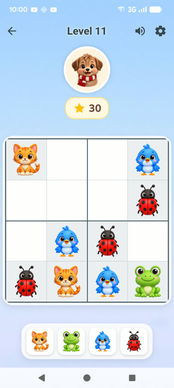
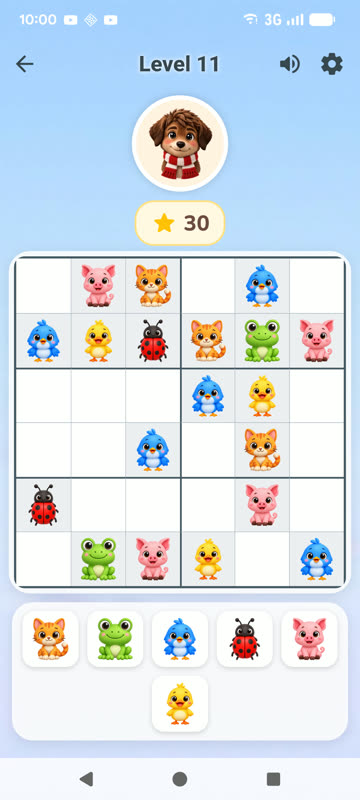

Free Printable Animal Sudoku
6 picture sudoku puzzles for kids aged 4–7, with pictures instead of numbers. Includes cut-out animal cards and answers.
About Sudimals
Sudimals is real sudoku with animals for kids aged 4–10, in 4×4, 6×6 and 9×9. No ads. The first 11 levels of every mode are free; the full version is a one-time in-app purchase. Android, on Google Play.
Get Sudimals on Google Play

Free for home and classroom use. Please share a link to this page instead of the PDF.